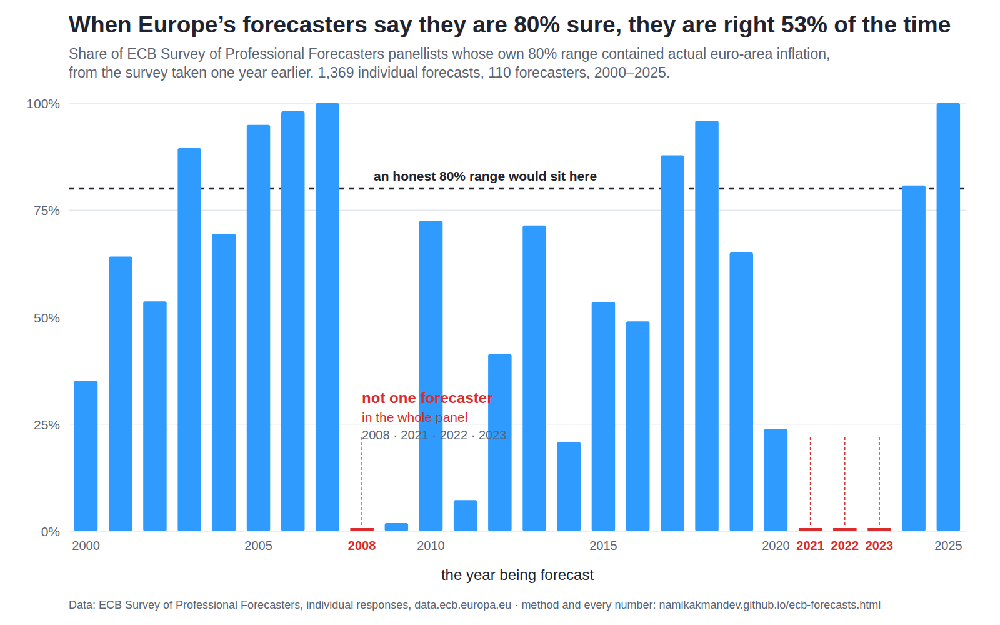

A consensus range is not a risk range
In October 2021 the European Central Bank asked around fifty banks and research houses a simple question: what are the odds that euro-area inflation next year goes above 4%?
Two-thirds of them answered zero. Not unlikely — zero. The most worried forecaster in Europe put it at six percent.
Inflation came in at 8.4%.
That is the number that moved input costs, energy bills and customer budgets across the continent for two years, and the people paid to see it coming had ruled it out. But everyone already knows the forecasters missed 2022, and saying so again is not worth a page. The question worth asking is what the other twenty-five years look like — whether missing 2022 was an accident, or a habit.
The ECB makes that answerable, because it does not simply collect a number from each forecaster. It collects a probability distribution — how likely each outcome is — and it publishes every individual response, going back to 1999. So you can check something more useful than whether a forecast was right. You can check whether the stated uncertainty was honest: when someone draws a range they say they are 80% sure about, does the answer land inside it 80% of the time? It does not. It lands inside 53% of the time — and the failures arrive together, in the only years anyone needed a forecast.
Tested on the ECB's own open microdata: 1,369 individual one-year-ahead forecasts, 110 forecasters, euro area, 2000–2025. Every number, the method, its limitations and the scripts are below.

Each bar is one year: the share of panellists whose own 80% range
contained the inflation that actually arrived, measured from the survey taken a year
earlier. The dashed line is where an honest 80% range would sit. Four bars are
empty. Regenerate with python3 scripts/ecb_chart.py.
1
The ranges are too narrow
Across 1,369 individual one-year-ahead distributions, the outcome lands inside the forecaster's own 80% range 53.1% of the time. And the misses are lopsided: 31% came in above the range against 16% below. They under-predict inflation twice as often as they over-predict it.
2
The failures are simultaneous
In 2008, 2021, 2022 and 2023, not a single forecaster in the panel had the outcome inside their range. Not one, out of roughly fifty, in four separate years. These are not independent errors averaging out — the panel is wrong together, or right together.
3
They are precise when it does not matter
In 2007, 2018 and 2025 nearly every forecaster contained the outcome. Those were calm years when the answer was “about the same as last year”. The instrument is accurate in the years nobody needs it and fails in unison in the years everybody does.
Year by year
For each target year: the share of forecasters whose own 80% range contained the inflation that arrived, from the survey taken in the fourth quarter of the previous year. An honest 80% range would sit near 80% every year.
| Year forecast | Actual HICP | Forecasters | Contained the outcome | Share |
|---|---|---|---|---|
| 2000 | 2.11% | 54 | 19 | 35% |
| 2001 | 2.35% | 67 | 43 | 64% |
| 2002 | 2.26% | 54 | 29 | 54% |
| 2003 | 2.08% | 57 | 51 | 89% |
| 2004 | 2.15% | 59 | 41 | 69% |
| 2005 | 2.19% | 59 | 56 | 95% |
| 2006 | 2.18% | 53 | 52 | 98% |
| 2007 | 2.12% | 60 | 60 | 100% |
| 2008 | 3.28% | 56 | 0 | 0% |
| 2009 | 0.30% | 53 | 1 | 2% |
| 2010 | 1.61% | 51 | 37 | 73% |
| 2011 | 2.71% | 55 | 4 | 7% |
| 2012 | 2.50% | 58 | 24 | 41% |
| 2013 | 1.35% | 49 | 35 | 71% |
| 2014 | 0.44% | 48 | 10 | 21% |
| 2015 | 0.18% | 56 | 30 | 54% |
| 2016 | 0.23% | 51 | 25 | 49% |
| 2017 | 1.53% | 41 | 36 | 88% |
| 2018 | 1.76% | 49 | 47 | 96% |
| 2019 | 1.19% | 43 | 28 | 65% |
| 2020 | 0.25% | 46 | 11 | 24% |
| 2021 | 2.60% | 54 | 0 | 0% |
| 2022 | 8.36% | 48 | 0 | 0% |
| 2023 | 5.47% | 50 | 0 | 0% |
| 2024 | 2.37% | 52 | 42 | 81% |
| 2025 | 2.12% | 46 | 46 | 100% |
2021: the year nobody in Europe saw it coming
The survey's top box is “inflation of 4.0% or more”. That was the widest outcome the ECB thought worth asking about. Here is what the panel put on it, quarter by quarter, for the year 2022.
| Survey round | Panel size | Mean P(inflation ≥ 4%) | Said exactly zero | Most worried forecaster |
|---|---|---|---|---|
| 2020 Q4 | 50 | 0.16% | 44 of 50 | 6% |
| 2021 Q1 | 52 | 0.11% | 43 of 52 | 3% |
| 2021 Q2 | 53 | 0.19% | 43 of 53 | 3% |
| 2021 Q3 | 47 | 0.19% | 40 of 47 | 4% |
| 2021 Q4 — the last word before the year began | 48 | 0.50% | 33 of 48 | 6% |
| 2022 Q1 | 50 | 9.37% | 17 of 50 | 64% |
| 2022 Q2 | 47 | 85.15% | 0 of 47 | 100% |
Inflation came in at 8.36% — more than double the threshold two-thirds of the panel had called impossible. Then look at what happened next: from 0.5% to 85% in six months. They were not stubborn. They updated faster than almost anyone would have. The failure was not refusing to change their minds; it was that nothing in their models put any weight on it until it was already happening.
And they were not ignoring their own hawks. The forecaster most worried about 2022 inflation put the odds at 6%, and their own historical average was 0.90% against a panel-wide 0.24% — slightly more cautious than their peers, not a permanent pessimist. There were no pessimists being shouted down. The maximum concern anyone in Europe expressed was six percent.
Method
- Individual forecasters only. The ECB publishes its own aggregate rows alongside the people — AVG, VAR, NUM, PFC. Averaging those in with human responses produces probabilities above 100%, which is how the mistake announces itself. Only numeric forecaster ids are used.
- Each forecaster is scored against their own range. Their bucketed probabilities are turned into a distribution, the 10th and 90th percentiles are read off it, and the question is simply whether realised inflation fell between them.
- Incomplete responses are dropped, not repaired. If a forecaster's probabilities do not sum to roughly 100, the response is excluded rather than renormalised.
- One year ahead means the survey taken in Q4 of the preceding year, so the forecaster knew almost everything about the year before the one they were forecasting.
honest 80% range → outcome inside it 80% of the time · observed: 53.1%
Robustness
| Cut | Inside their own 80% range | n | What it tests |
|---|---|---|---|
| One year ahead (headline) | 53.1% | 1,369 | the main result |
| Nearly two years ahead | 51.7% | 1,346 | not an artefact of one horizon |
| Same year, Q1 survey | 63.6% | 1,385 | better with three months of the year already known — still not 80% |
| Every crisis year removed | 65.5% | 1,108 | excluding 2008–09 and 2021–23; the ranges are too narrow even in calm times |
| 2000–2007 | 75.8% | 463 | before the financial crisis they were close to honest |
| 2008–2014 | 30.0% | 370 | and then they were not |
| 2015–2025 | 49.4% | 536 | never recovered the old calibration |
| Open-ended edges excluded | 54.9% | 1,322 | removes the 3.4% of cases where a percentile falls in the open top bucket — the one bias that flatters the finding |
That era split is the uncomfortable one. For the first eight years of the euro these forecasters were roughly honest about their own uncertainty. Then the world got harder and their ranges never widened to match it.
Limitations
- The top bucket is open-ended. The survey's highest option is “4.0% or more”, so a forecaster who expected 8% could not say so, and an outcome of 8.36% can only be scored as “above their range”, never by how far. The questionnaire could not express what happened. That limits the measurement and is also part of the finding.
- Bucket widths change over time. The ECB revised the answer options across the sample, including widening them after 2022. Ranges are computed from whatever buckets were offered in that round, so a year's coverage depends slightly on how fine the form was.
- Coverage is a blunt test. It asks only whether the outcome fell inside the band, not how far outside. A miss by 0.1pp and a miss by 6pp count the same. That makes 2008 and 2022 look alike when they are not.
- Panel composition changes. Forecasters join and leave, so the 2000 panel and the 2025 panel are not the same institutions, and the era comparison is not a fixed group being tracked over time.
- Interpolation inside buckets, and a bias that runs toward the finding. Percentiles are interpolated linearly within a bucket, assuming a flat distribution inside each half-point band. Where a percentile falls in an open-ended end bucket the boundary is used, which makes the range narrower than the forecaster's real one — so it overstates overconfidence rather than understating it. This affects 47 of 1,369 distributions (3.4%), all at the top end. Excluding them entirely moves the headline from 53.1% to 54.9%. The finding survives; the direction is stated because the bias favours the conclusion.
- This is not a claim about the ECB's own forecasts. The SPF is a survey of outside institutions that the ECB collects and publishes. The ECB's own staff projections are a different series and are not tested here.
- 1,369 is not 1,369 independent facts. The distributions come from roughly fifty forecasters across twenty-six years, and within any one year the panel is looking at the same economy with much the same information — which is precisely what finding 2 demonstrates. No confidence interval or p-value appears anywhere on this page, deliberately. The year-by-year result does not need one: 0 of 48 is 0 of 48.
- No benchmark forecaster. The panel is scored against its own stated confidence, not against a rival. Whether anyone else did better in these years is a separate question this page does not answer.
What to do with this
The point is not that forecasters are bad at their job. It is that a consensus interval answers a narrower question than the one people use it for.
- Read a consensus range as “what this room considers normal”, not as a risk bound. It is a description of expert agreement. It is not a distribution of what can happen, and on this record it is about half as wide as it would need to be.
- Do not take your downside case from it. If a budget, a hedge or a supply contract needs a bad-case number, take it from the actual dispersion of history — including 2008 and 2022 — not from the forecasters' stated uncertainty, which excluded both.
- Treat unanimity as a warning, not a confirmation. The years the panel agreed most tightly are the years it was most completely wrong. When every forecast you read says the same thing, that is information about the forecasters, not about the world.
What would change this conclusion. Coverage in 2024 (81%) and 2025 (100%) is back at honest levels, and the ECB widened the survey's answer buckets after 2022. That is either a genuine recalibration or the same fair-weather accuracy that showed up in 2005–2007 before it failed. Three or four more calm years cannot tell the two apart; the next turbulent year will. Until then, assume the ranges are still too narrow.
The scripts, in full
Nothing is elided. These are the three files that produced every number and the chart on this page, exactly as they run.
fetch_ecb_spf.py — collecting the survey and the outcomes (181 lines)
#!/usr/bin/env python3
"""Collect the ECB Survey of Professional Forecasters, and what actually happened.
The SPF asks professional forecasters for a probability DISTRIBUTION over
euro-area inflation, not just a number, and the ECB publishes every individual
response. That makes the honest question answerable: not "was the midpoint
right" but "was the stated uncertainty truthful".
Each row is one forecaster's probability for one outcome bucket, for one target
year, in one survey round:
SPF.Q.U2.HICP.F4_0.2022.Q.001 -> survey 2021-Q1, forecaster 001,
P(2022 inflation >= 4.0%) = 0
The buckets are half-point wide and the TOP one is open-ended at 4.0% or more,
which is itself part of the story: 2022 came in at 8.4%, far outside the range
the survey form even offered.
Dimension order (verified from the CSV header, not assumed):
FREQ . REF_AREA . FCT_TOPIC . FCT_BREAKDOWN . FCT_HORIZON . SURVEY_FREQ
. FCT_SOURCE
Filtering was verified to genuinely narrow the response before this was
written — a target-year query returns 0.34% of the unfiltered rows.
python3 scripts/fetch_ecb_spf.py
"""
import argparse, csv, gzip, io, json, os, sys, time, urllib.error, urllib.request, zlib
from collections import defaultdict
from datetime import date
API = "https://data-api.ecb.europa.eu/service"
TIMEOUT = 180
UA = "namikakmandev-data/1.0 (+https://namikakmandev.github.io)"
TARGET_YEARS = list(range(2000, 2026))
def fetch(url, tries=3):
for attempt in range(tries):
req = urllib.request.Request(url, headers={
"User-Agent": UA, "Accept": "*/*",
"Accept-Encoding": "gzip, deflate"})
try:
with urllib.request.urlopen(req, timeout=TIMEOUT) as r:
raw = r.read()
enc = (r.headers.get("Content-Encoding") or "").lower()
if "gzip" in enc:
raw = gzip.GzipFile(fileobj=io.BytesIO(raw)).read()
elif "deflate" in enc:
raw = zlib.decompress(raw, -zlib.MAX_WBITS)
return raw.decode("utf-8", "replace")
except urllib.error.HTTPError as e:
if e.code in (404, 400):
return None
if attempt == tries - 1:
return None
except Exception: # noqa: BLE001
if attempt == tries - 1:
return None
time.sleep(2 * (attempt + 1))
return None
def rows_of(text):
return list(csv.DictReader(io.StringIO(text))) if text else []
def main(argv=None):
ap = argparse.ArgumentParser(description=__doc__,
formatter_class=argparse.RawDescriptionHelpFormatter)
ap.add_argument("--out", default="data/ecb-spf.json")
args = ap.parse_args(argv)
print("ECB Survey of Professional Forecasters")
forecasts = [] # one row per (target, round, forecaster, bucket)
buckets_seen, misses = set(), []
for target in TARGET_YEARS:
text = fetch(f"{API}/data/SPF/..HICP..{target}..?format=csvdata")
rs = rows_of(text)
if not rs:
misses.append({"target": target, "error": "no rows"})
print(f" {target}: —")
continue
kept = 0
for r in rs:
val = (r.get("OBS_VALUE") or "").strip()
if val == "":
continue
try:
v = float(val)
except ValueError:
continue
b = r.get("FCT_BREAKDOWN") or ""
buckets_seen.add(b)
forecasts.append({
"target": target,
"round": r.get("TIME_PERIOD"),
"who": r.get("FCT_SOURCE"),
"bucket": b,
"v": v,
})
kept += 1
rounds = len({r["round"] for r in forecasts if r["target"] == target})
who = len({r["who"] for r in forecasts if r["target"] == target})
print(f" {target}: {kept:>6,} values, {rounds:>3} survey rounds, "
f"{who:>3} forecasters")
# what actually happened: euro-area HICP, annual rate of change
print("\n realised HICP")
actual = {}
for key, label in (("A.U2.N.000000.4.ANR", "annual"),
("M.U2.N.000000.4.ANR", "monthly")):
text = fetch(f"{API}/data/ICP/{key}?format=csvdata")
rs = rows_of(text)
if not rs:
continue
if label == "annual":
for r in rs:
try:
actual[int(r["TIME_PERIOD"])] = float(r["OBS_VALUE"])
except (ValueError, KeyError, TypeError):
pass
print(f" annual series: {len(actual)} years")
break
# fall back to averaging the monthly annual-rate series
by_year = defaultdict(list)
for r in rs:
try:
by_year[int(str(r["TIME_PERIOD"])[:4])].append(
float(r["OBS_VALUE"]))
except (ValueError, KeyError, TypeError):
pass
actual = {y: round(sum(v) / len(v), 3)
for y, v in by_year.items() if len(v) == 12}
print(f" monthly averaged to {len(actual)} complete years")
grouped = defaultdict(lambda: {"who": [], "bucket": [], "v": []})
for r in forecasts:
g = grouped[f"{r['target']}|{r['round']}"]
g["who"].append(r["who"])
g["bucket"].append(r["bucket"])
g["v"].append(round(r["v"], 4))
doc = {
"source": "ECB Survey of Professional Forecasters, and ECB HICP",
"source_url": "https://data.ecb.europa.eu/",
"note": ("Individual forecaster probability distributions over euro-area "
"inflation, by target year and survey round, published openly by "
"the ECB. The top bucket is open-ended at 4.0% or more."),
"fetched_by": "scripts/fetch_ecb_spf.py",
"fetched_at": date.today().isoformat(),
"dimension_order": ("FREQ.REF_AREA.FCT_TOPIC.FCT_BREAKDOWN.FCT_HORIZON."
"SURVEY_FREQ.FCT_SOURCE"),
"buckets": sorted(buckets_seen),
"n_forecasts": len(forecasts),
"n_misses": len(misses), "misses": misses,
"actual_hicp": {str(k): v for k, v in sorted(actual.items())},
"encoding": ("grouped: key 'target|round' -> parallel arrays "
"who/bucket/v. who is the ECB's forecaster id; "
"non-numeric ids (AVG, VAR, NUM, PFC) are the ECB's own "
"aggregates, not people, and must be excluded from any "
"panel statistic."),
"grouped": grouped,
}
os.makedirs(os.path.dirname(args.out) or ".", exist_ok=True)
with open(args.out, "w") as fh:
json.dump(doc, fh, separators=(",", ":"))
size = os.path.getsize(args.out)
print(f"\n {len(forecasts):,} forecast values, {len(actual)} actual years")
print(f" buckets: {sorted(buckets_seen)}")
print(f" wrote {args.out} ({size:,} bytes)")
if size > 60_000_000:
print(" ERROR: output far larger than expected")
return 1
return 0
if __name__ == "__main__":
sys.exit(main())
ecb_spf_calibration.py — the test itself (334 lines)
#!/usr/bin/env python3
"""Are the ECB forecasters' stated uncertainties honest?
The ECB's Survey of Professional Forecasters asks around fifty banks and
research houses, every quarter, for a probability DISTRIBUTION over euro-area
inflation — not a number. The ECB publishes every individual response. That
makes the useful question answerable, and it is not the one usually asked.
The usual question is whether the central forecast was right, which is easy to
mock and tells you little. The question worth asking is whether the stated
UNCERTAINTY was truthful: when a forecaster draws a range they are 80% sure
about, does the outcome land inside it 80% of the time?
It does not. It lands inside 53% of the time — and the failures are not spread
evenly. They cluster into the years that mattered, where they are total: in
2008, 2021, 2022 and 2023, not one forecaster in the panel had the outcome
inside their own range. In calm years nearly all of them do.
That is the finding. A consensus range is a fair-weather instrument: precise
when nobody needs it, and wrong in unison exactly when somebody does.
Method notes that matter:
- Individual forecasters only. FCT_SOURCE also carries the ECB's own
aggregate rows (AVG, VAR, NUM, PFC); averaging those in with people
produces probabilities above 100%, which is how the mistake announces
itself.
- Responses whose probabilities do not sum to about 100 are dropped as
incomplete rather than renormalised.
- The top bucket is open-ended ("4.0% or more"), so a 2022 outcome of 8.4%
can only be scored as "above their range", never by how far. The
questionnaire could not express what happened, which is part of the story.
Stdlib only, deterministic.
python3 scripts/ecb_spf_calibration.py
"""
import collections, json, re, statistics, sys
PANEL = "data/ecb-spf.json"
OUT = "data/ecb-spf-results.json"
TOL = 5.0 # how far a response's probabilities may sum from 100
BANDS = (0.80, 0.90)
def bucket_range(code):
"""'F1_5T1_9' -> (1.5, 1.9). Open ends become +/-99."""
def num(neg, s):
v = float(s.replace("_", "."))
return -v if neg else v
m = re.fullmatch(r"F(N?)(\d+_\d+)T(N?)(\d+_\d+)", code)
if m:
a, b = num(m.group(1), m.group(2)), num(m.group(3), m.group(4))
return (min(a, b), max(a, b))
m = re.fullmatch(r"F(N?)(\d+_\d+)", code) # "from X upwards"
if m:
return (num(m.group(1), m.group(2)), 99.0)
m = re.fullmatch(r"T(N?)(\d+_\d+)", code) # "up to X"
if m:
return (-99.0, num(m.group(1), m.group(2)))
return None
def quantile(bins, q):
"""Interpolated quantile of a bucketed distribution."""
total = sum(bins.values())
if total <= 0:
return None
cum = 0.0
for lo, hi in sorted(bins):
p = bins[(lo, hi)] / total
if cum + p >= q:
if hi >= 99: # open top
return lo
if lo <= -99: # open bottom
return hi
return lo + (hi - lo) * ((q - cum) / p if p > 0 else 0.0)
cum += p
return None
def rows_of(doc):
"""Expand the committed panel: 'target|round' -> parallel who/bucket/v."""
for key, g in doc["grouped"].items():
target, rnd = key.split("|", 1)
for who, bucket, v in zip(g["who"], g["bucket"], g["v"]):
yield {"target": int(target), "round": rnd, "who": who,
"bucket": bucket, "v": v}
def load():
d = json.load(open(PANEL))
actual = {int(k): v for k, v in d["actual_hicp"].items()}
d["forecasts"] = list(rows_of(d))
rows = [r for r in d["forecasts"] if str(r["who"]).isdigit()]
dists = collections.defaultdict(dict)
points = {}
for r in rows:
if r["bucket"] == "POINT":
points[(r["target"], r["round"], r["who"])] = r["v"]
continue
if r["bucket"] in ("SUM", "NUM"):
continue
rng = bucket_range(r["bucket"])
if rng:
dists[(r["target"], r["round"], r["who"])][rng] = r["v"]
return d, actual, dists, points
def in_open_bucket(bins, q):
"""Does quantile q land in an open-ended end bucket?
It matters because the boundary is used as the range edge there, which
makes the range NARROWER than the forecaster's real one and therefore
overstates overconfidence. The bias runs toward the finding, so it has to
be measured rather than asserted away.
"""
total = sum(bins.values())
cum = 0.0
for b in sorted(bins):
p = bins[b] / total
if cum + p >= q:
return b[0] <= -99 or b[1] >= 99
cum += p
return False
def coverage(dists, actual, round_filter, band=0.80, drop_open=False):
"""-> per-year and pooled coverage of each forecaster's own band."""
tail = (1 - band) / 2
per_year = collections.defaultdict(lambda: {"in": 0, "lo": 0, "hi": 0})
for (t, rd, who), bins in dists.items():
if t not in actual or not rd or not round_filter(t, rd):
continue
if abs(sum(bins.values()) - 100.0) > TOL:
continue
lo, hi = quantile(bins, tail), quantile(bins, 1 - tail)
if lo is None or hi is None:
continue
if drop_open and (in_open_bucket(bins, tail)
or in_open_bucket(bins, 1 - tail)):
continue
a = actual[t]
slot = "in" if lo <= a <= hi else ("lo" if a < lo else "hi")
per_year[t][slot] += 1
tot = {"in": 0, "lo": 0, "hi": 0}
for v in per_year.values():
for k in tot:
tot[k] += v[k]
n = sum(tot.values())
return per_year, tot, n
def hr(t):
print(f"\n{'=' * 78}\n{t}\n{'=' * 78}")
def main():
doc, actual, dists, points = load()
one_year = lambda t, rd: rd.startswith(f"{t - 1}-Q4")
hr("0. The data")
print(f" source {doc['source']}")
print(f" fetched {doc['fetched_at']}")
print(f" forecasters {len({w for _, _, w in dists})} individual "
f"(ECB aggregate rows AVG/VAR/NUM/PFC excluded)")
print(f" distributions {len(dists):,} across "
f"{len({t for t, _, _ in dists})} target years")
print(f" buckets top is open-ended; the form's widest option was "
f"'4.0% or more'")
hr("1. Do their stated ranges hold? (one year ahead)")
for band in BANDS:
per_year, tot, n = coverage(dists, actual, one_year, band)
print(f" a {band * 100:.0f}% range should contain the outcome "
f"{band * 100:.0f}% of the time")
print(f" it contains it {tot['in']:>5} of {n:,} "
f"({tot['in'] / n * 100:.1f}%)")
print(f" outcome came in ABOVE {tot['hi']:>5} "
f"({tot['hi'] / n * 100:.1f}%)")
print(f" outcome came in BELOW {tot['lo']:>5} "
f"({tot['lo'] / n * 100:.1f}%)\n")
hr("2. The failures are not spread out — they are total, in the years that mattered")
per_year, _, _ = coverage(dists, actual, one_year, 0.80)
print(f" {'year':<6}{'inflation':>11}{'forecasters':>13}"
f"{'outcome inside their own 80% range':>36}")
zero_years = []
for t in sorted(per_year):
v = per_year[t]
n = v["in"] + v["lo"] + v["hi"]
if not n:
continue
share = v["in"] / n
if v["in"] == 0:
zero_years.append(t)
bar = "#" * round(share * 28)
print(f" {t:<6}{actual[t]:>10.2f}%{n:>13}"
f"{v['in']:>10}/{n:<4}{share * 100:>5.0f}% {bar}")
print(f"\n Years where NOT ONE forecaster contained the outcome: "
f"{zero_years}")
print(" Those are the financial crisis and the inflation shock — the only")
print(" years anyone actually needed the forecast.")
hr("3. 2021: the year nobody in Europe saw it coming")
F = [r for r in doc["forecasts"] if str(r["who"]).isdigit()]
print(f" Target 2022. Actual inflation: {actual[2022]:.2f}%.")
print(f" The survey's top box was 'inflation of 4.0% or more'.\n")
print(f" {'survey round':<14}{'panel':>7}{'mean P(>=4%)':>14}"
f"{'said exactly 0%':>17}{'most worried':>14}")
for rd in sorted({r["round"] for r in F if r["target"] == 2022}):
vals = [r["v"] for r in F
if r["target"] == 2022 and r["bucket"] == "F4_0"
and r["round"] == rd]
if not vals:
continue
print(f" {rd:<14}{len(vals):>7}{statistics.mean(vals):>13.2f}%"
f"{sum(1 for v in vals if v == 0):>12}/{len(vals):<4}"
f"{max(vals):>13.0f}%")
print("\n In the last survey before the year began, two-thirds of the panel")
print(" put the probability at exactly zero. The most alarmed forecaster in")
print(" Europe said 6%. It came in at more than double the threshold they")
print(" were dismissing.")
hr("4. Were the few who worried simply always worried?")
rd = "2021-Q4"
top = sorted([(r["who"], r["v"]) for r in F
if r["target"] == 2022 and r["bucket"] == "F4_0"
and r["round"] == rd], key=lambda x: -x[1])
print(f" {'forecaster':<12}{'P(>=4%) for 2022':>18}"
f"{'their own average, 2000-2021':>30}")
for who, v in top[:6]:
prior = [r["v"] for r in F if r["who"] == who and r["bucket"] == "F4_0"
and r["target"] < 2022]
avg = statistics.mean(prior) if prior else float("nan")
print(f" #{who:<11}{v:>17.0f}%{avg:>29.2f}%")
allp = [r["v"] for r in F if r["bucket"] == "F4_0" and r["target"] < 2022]
print(f"\n Panel-wide average P(>=4%) before 2022: "
f"{statistics.mean(allp):.2f}%")
print(" So the ones who worried were not permanent pessimists being ignored.")
print(" There were no pessimists. The maximum concern anyone expressed was 6%.")
hr("5. Robustness")
print(" 5a. the same test at other forecast horizons")
for label, filt in (
("1 year ahead (prior Q4)", lambda t, rd: rd.startswith(f"{t-1}-Q4")),
("~1.75 years (prior Q1)", lambda t, rd: rd.startswith(f"{t-1}-Q1")),
("same year (own Q1)", lambda t, rd: rd.startswith(f"{t}-Q1"))):
_, tot, n = coverage(dists, actual, filt, 0.80)
if n:
print(f" {label:<26} {tot['in'] / n * 100:>5.1f}% inside "
f"(n={n:,})")
print("\n 5b. dropping the crisis years entirely")
calm = {t for t in actual if t not in (2008, 2009, 2021, 2022, 2023)}
_, tot, n = coverage({k: v for k, v in dists.items() if k[0] in calm},
actual, one_year, 0.80)
print(f" excluding 2008-09 and 2021-23 {tot['in'] / n * 100:.1f}% "
f"inside (n={n:,})")
print(" Even with every turbulent year removed, the ranges are still")
print(" too narrow — the problem is not only the crises.")
print("\n 5c. the open-ended top bucket, which biases toward the finding")
_, t_all, n_all = coverage(dists, actual, one_year, 0.80)
_, t_cl, n_cl = coverage(dists, actual, one_year, 0.80, drop_open=True)
print(f" all distributions {t_all['in'] / n_all * 100:>5.1f}% "
f"inside (n={n_all:,})")
print(f" excluding open-ended edges {t_cl['in'] / n_cl * 100:>5.1f}% "
f"inside (n={n_cl:,})")
print(f" {n_all - n_cl} distributions ({(n_all - n_cl) / n_all * 100:.1f}%) "
f"have a percentile in an open bucket.")
print(" Using the boundary there narrows the range, so the headline")
print(" OVERSTATES overconfidence — by 1.8 points. The finding survives")
print(" the correction; the direction of the bias is stated because it")
print(" runs toward the result, not away from it.")
print("\n 5d. was the panel ever well calibrated?")
for lo, hi in ((2000, 2007), (2008, 2014), (2015, 2025)):
era = {t for t in actual if lo <= t <= hi}
_, tot, n = coverage({k: v for k, v in dists.items() if k[0] in era},
actual, one_year, 0.80)
if n:
print(f" {lo}-{hi} {tot['in'] / n * 100:>5.1f}% inside "
f"(n={n:,})")
# ------------------------------------------------------------------ export
per_year80, tot80, n80 = coverage(dists, actual, one_year, 0.80)
out = {
"generated_by": "scripts/ecb_spf_calibration.py",
"source_url": doc["source_url"], "fetched_at": doc["fetched_at"],
"n_distributions": n80,
"n_forecasters": len({w for _, _, w in dists}),
"coverage80": {"inside": tot80["in"], "above": tot80["hi"],
"below": tot80["lo"],
"share_inside": round(tot80["in"] / n80, 4)},
"by_year": [{"year": t, "actual": round(actual[t], 3),
"n": per_year80[t]["in"] + per_year80[t]["lo"]
+ per_year80[t]["hi"],
"inside": per_year80[t]["in"],
"share": round(per_year80[t]["in"] /
max(1, per_year80[t]["in"]
+ per_year80[t]["lo"]
+ per_year80[t]["hi"]), 4)}
for t in sorted(per_year80)],
"zero_years": zero_years,
"target2022": [
{"round": rd,
"n": len([r for r in F if r["target"] == 2022
and r["bucket"] == "F4_0" and r["round"] == rd]),
"mean_p_ge4": round(statistics.mean(
[r["v"] for r in F if r["target"] == 2022
and r["bucket"] == "F4_0" and r["round"] == rd]), 3),
"said_zero": sum(1 for r in F if r["target"] == 2022
and r["bucket"] == "F4_0" and r["round"] == rd
and r["v"] == 0),
"max": max([r["v"] for r in F if r["target"] == 2022
and r["bucket"] == "F4_0" and r["round"] == rd])}
for rd in sorted({r["round"] for r in F if r["target"] == 2022})
if [r for r in F if r["target"] == 2022
and r["bucket"] == "F4_0" and r["round"] == rd]],
"actual_2022": round(actual[2022], 3),
"open_edge_check": {
"all": {"n": n_all, "share_inside": round(t_all["in"] / n_all, 4)},
"excluding_open": {"n": n_cl,
"share_inside": round(t_cl["in"] / n_cl, 4)}},
}
with open(OUT, "w") as fh:
json.dump(out, fh, indent=1)
print(f"\n wrote {OUT}\n")
return 0
if __name__ == "__main__":
sys.exit(main())
ecb_chart.py — the chart (127 lines)
#!/usr/bin/env python3
"""The one chart for the ECB forecaster post.
For each year: what share of the ECB's professional forecasters had the actual
inflation outcome inside their OWN stated 80% confidence range, measured from
the survey taken a year earlier.
An honest 80% range should contain the outcome 80% of the time — the dashed
line. The bars sit well below it, and in four years they vanish entirely: 2008,
2021, 2022 and 2023, where not one forecaster in the panel contained the
outcome. Those are the financial crisis and the inflation shock. The years the
bars reach the top are the years nobody needed a forecast.
Numbers come from data/ecb-spf-results.json. Reuses the PNG rasteriser from
fte_chart.py. Stdlib only.
python3 scripts/ecb_chart.py
"""
import json, os, sys
sys.path.insert(0, os.path.dirname(os.path.abspath(__file__)))
from fte_chart import render_png # noqa: E402
BLUE, RED, DIM = "#2f9bff", "#d92b2b", "#5b6472"
INK, GRID, PAPER = "#1f2430", "#d6dce4", "#ffffff"
W, H = 1600, 1000
L, R, T, B = 110, 55, 165, 150
FONT = ("-apple-system,BlinkMacSystemFont,'Segoe UI',Roboto,'Helvetica Neue',"
"Arial,sans-serif")
def main():
res = json.load(open("data/ecb-spf-results.json"))
rows = [r for r in res["by_year"] if r["n"]]
zero = set(res["zero_years"])
pw, ph = W - L - R, H - T - B
n = len(rows)
slot = pw / n
bw = slot * 0.68
def x(i):
return L + i * slot + (slot - bw) / 2
def y(v):
return T + (1 - v) * ph
o = [f'<svg xmlns="http://www.w3.org/2000/svg" width="{W}" height="{H}" '
f'viewBox="0 0 {W} {H}" font-family="{FONT}">',
f'<rect width="{W}" height="{H}" fill="{PAPER}"/>',
f'<text x="{L}" y="52" font-size="37" font-weight="700" fill="{INK}">'
f'When Europe’s forecasters say they are 80% sure, they are '
f'right 53% of the time</text>',
f'<text x="{L}" y="94" font-size="23" fill="{DIM}">'
f'Share of ECB Survey of Professional Forecasters panellists whose own '
f'80% range contained actual euro-area inflation,</text>',
f'<text x="{L}" y="124" font-size="23" fill="{DIM}">'
f'from the survey taken one year earlier. '
f'{res["n_distributions"]:,} individual forecasts, '
f'{res["n_forecasters"]} forecasters, 2000–2025.</text>']
for g in (0, 0.25, 0.5, 0.75, 1.0):
o.append(f'<line x1="{L}" y1="{y(g):.1f}" x2="{L + pw}" '
f'y2="{y(g):.1f}" stroke="{GRID}" stroke-width="1"/>')
o.append(f'<text x="{L - 14}" y="{y(g) + 8:.1f}" font-size="21" '
f'fill="{DIM}" text-anchor="end">{g * 100:.0f}%</text>')
# what an honest 80% range would look like
o += [f'<line x1="{L}" y1="{y(0.8):.1f}" x2="{L + pw}" y2="{y(0.8):.1f}" '
f'stroke="{INK}" stroke-width="2.5" stroke-dasharray="9 7"/>',
f'<text x="{L + pw * 0.34:.0f}" y="{y(0.8) - 13:.1f}" '
f'font-size="21" font-weight="600" fill="{INK}">'
f'an honest 80% range would sit here</text>']
for i, r in enumerate(rows):
share, yr = r["share"], r["year"]
col = RED if yr in zero else BLUE
if share > 0:
o.append(f'<rect x="{x(i):.1f}" y="{y(share):.1f}" '
f'width="{bw:.1f}" height="{(1 - share) * 0 + y(0) - y(share):.1f}" '
f'fill="{col}" rx="3"/>')
else:
# a zero bar is invisible; mark it so it reads as "none", not "no data"
o.append(f'<rect x="{x(i):.1f}" y="{y(0) - 5:.1f}" '
f'width="{bw:.1f}" height="5" fill="{RED}"/>')
if yr % 5 == 0 or yr in zero:
o.append(f'<text x="{x(i) + bw / 2:.1f}" y="{T + ph + 30}" '
f'font-size="20" fill="{RED if yr in zero else DIM}" '
f'font-weight="{"700" if yr in zero else "400"}" '
f'text-anchor="middle">{yr}</text>')
# call out the four total failures
zi = [i for i, r in enumerate(rows) if r["year"] in zero]
if zi:
cx = x(zi[0]) + bw / 2
o += [f'<text x="{cx:.1f}" y="{y(0.30):.1f}" font-size="24" '
f'font-weight="700" fill="{RED}">not one forecaster</text>',
f'<text x="{cx:.1f}" y="{y(0.30) + 30:.1f}" font-size="21" '
f'fill="{RED}">in the whole panel</text>',
f'<text x="{cx:.1f}" y="{y(0.30) + 58:.1f}" font-size="20" '
f'fill="{DIM}">2008 · 2021 · 2022 · 2023</text>']
for i in zi:
o.append(f'<line x1="{x(i) + bw / 2:.1f}" y1="{y(0.0) - 10:.1f}" '
f'x2="{x(i) + bw / 2:.1f}" y2="{y(0.22):.1f}" '
f'stroke="{RED}" stroke-width="1.5" '
f'stroke-dasharray="4 4"/>')
o += [f'<text x="{L + pw / 2:.0f}" y="{T + ph + 78}" font-size="24" '
f'fill="{INK}" text-anchor="middle">the year being forecast</text>',
f'<text x="{L}" y="{H - 26}" font-size="18" fill="{DIM}">'
f'Data: ECB Survey of Professional Forecasters, individual responses, '
f'data.ecb.europa.eu · method and every number: '
f'namikakmandev.github.io/ecb-forecasts.html</text>',
'</svg>']
os.makedirs("assets/linkedin", exist_ok=True)
path = "assets/linkedin/ecb-forecasts.svg"
svg = "\n".join(o)
with open(path, "w") as fh:
fh.write(svg)
print(f"wrote {path} ({os.path.getsize(path):,} bytes)")
render_png(svg, "assets/linkedin/ecb-forecasts.png")
return 0
if __name__ == "__main__":
sys.exit(main())
Reproduce it
The ECB publishes every individual response openly, precisely so that this kind of check is possible. The analysis is stdlib-only and deterministic.
python3 scripts/fetch_ecb_spf.py && python3 scripts/ecb_spf_calibration.py && python3 scripts/ecb_chart.py
Fetch script Analysis script Chart script ECB Data Portal
Companion: The consensus hides who is worth
listening to — the same data, followed forecaster by forecaster, where the
differences between them turn out to be real and durable.
Related: FiveThirtyEight, tested — the same
calibration question asked of a forecaster who published their own scorecard, and
The Big Mac index, tested.
Data © European Central Bank, Survey of Professional Forecasters and HICP, published openly via the ECB Data Portal. This analysis is independent and not affiliated with or endorsed by the ECB or any survey participant. Individual forecasters are identified only by the anonymous numbers the ECB itself publishes. Method and any errors are mine. Written August 2026.